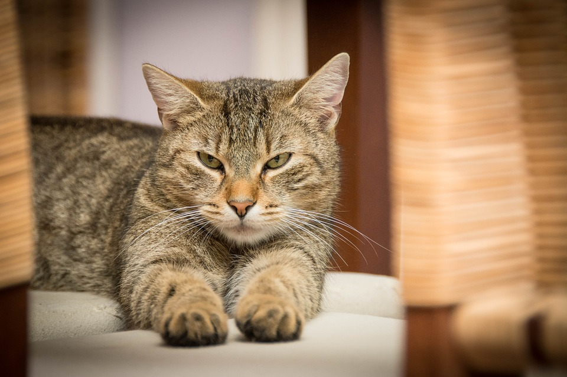
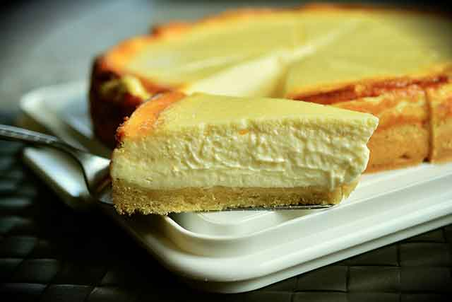
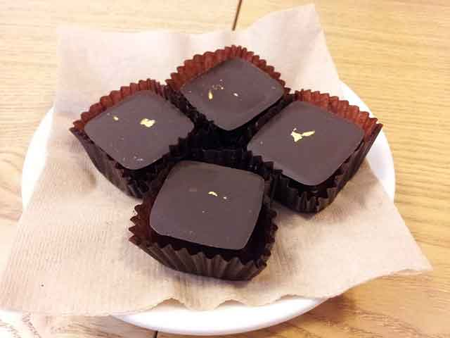
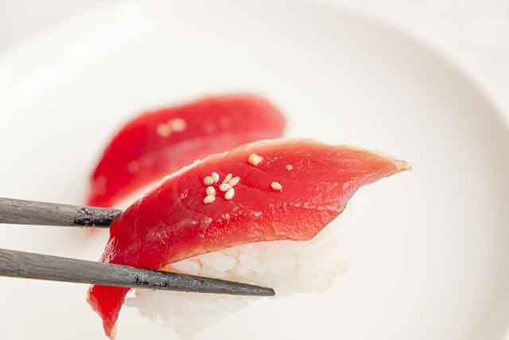
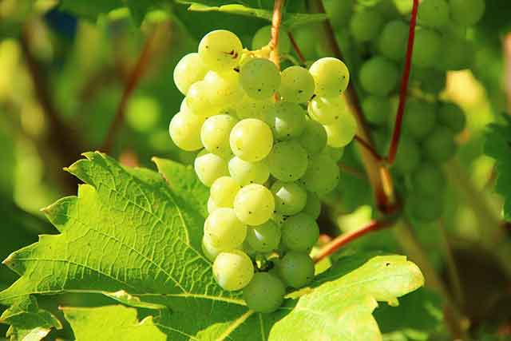

고양이가 먹으면 안 되는 사람 음식
사람도 알레르기 반응이 있는 음식은 될 수 있으면 먹지 말아야 합니다. 단순히 두드러기나 가려움증 정도로 끝나는 사람도 있지만, 증상이 심한 사람은 호흡 곤란이 찾아올 수도 있으니까요. 강아지, 고양이도 마찬가지인데요. 특히 고양이는 아파도 아픈 내색을 하지 않는 동물로 잘 알려졌습니다. 그래서 고양이에게 무엇인가를 주고 싶다면, 먼저 급여해도 괜찮은 음식인지를 확인하는 것이 중요합니다. 고양이가 먹으면 안 되는 사람 음식! 확인해 볼까요?
[ 유 제 품 ]
사람이 먹는 유제품은 동물에게 해로울 수 있습니다. 대표적으로 소화불량이나 설사를 유발할 수 있죠. 일반적으로 사람이 먹는 유제품에는 '락토스' 성분이 함유되어 있는데, 이 성분은 고양이가 소화할 수 없습니다. 우리가 흔히 먹는 우유를 비롯해 치즈 역시 고양이에게 급여해서는 안 됩니다.
단, 고양이가 먹을 수 있게 만들어진 우유, 치즈 같은 유제품은 락토스 프리, 무염으로 소량씩 급여하는 것은 괜찮습니다.
[ 초 콜 릿 ]
초콜릿은 고양이, 강아지 모두에게 해롭기로 잘 알려졌습니다. 초콜릿의 원료인 카카오는 '테오브로민'이라는 성분과 카페인이 들어 있습니다. 이 물질은 '메틸 크산틴'이라는 화학물질로 이런 물질은 고양이의 심장과 신경계를 자극하고 소량만 섭취해도 경련, 구토, 발작, 불안, 고열, 죽음 등에 이를 수 있습니다. 아주 소량에도 이런 증상이 나타날 수 있으므로 고양이 손이 닿는 어디든 초콜릿이 남아 있지 않도록 주의해야 합니다.
[ 날 생 선 ]
고양이 하면 입안 가득 생선을 물고 있는 모습이 떠오를 것입니다. 고양이는 생선을 즐길 것 같지만, 실제로 날생선을 먹으면 위험해질 가능성이 큽니다. 날 것에는 '살모넬라균'이 있어 식중독을 유발할 수 있습니다. 더불어 날생선에 있는 물질이 고양이에게 꼭 필요한 비타민 일부를 파괴해 식욕을 떨어뜨리고 발작이나 혼수상태를 유발할 수 있습니다.
[ 포 도 ]
달달한 포도. 겉으로 보기에는 전혀 문제없을 것 같은 과일이지만, 포도에는 독소가 있어 고양이 신장을 망가뜨릴 수 있습니다. 신장이 망가지면서 급성 신부전증이 찾아올 수 있고 중독 증상을 보일 수 있습니다. 만약 포도를 먹었다면 빠르게 병원을 찾아 검사를 받아 보는 것이 좋습니다.
그 외에도 당이 많은 껌이나 사탕을 주의하시고, 백합과 식물 역시 '티오황산염'이 들어 있어 고양이가 소화할 수 없고 적혈구를 파괴할 수 있어 주의가 필요합니다.
평소 고양이가 좋아할 것 같은 음식이라도 결코 줘서는 안 되는 음식들이 있습니다. 소중한 반려동물의 생명을 잃는 상황이 발생할 수 있으므로 반드시 주의하시고 고양이의 안전과 건강을 지킬 수 있는 주의가 필요하겠습니다!
[출처] 고양이가 먹으면 안 되는 사람 음식 ｜ 작성자 코코네집